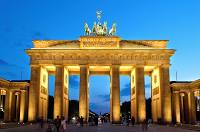

Berlin
Berlín es una de las capitales más vibrantes, cargadas de historia y culturalmente diversas de Europa. Esta guía recopila de forma detallada todo lo necesario para planificar una visita perfecta.
🗺️ Ficha Técnica de la Localidad
- País: Alemania (Unión Europea)
- Estado federado: Berlín (Ciudad-Estado)
- Coordenadas geográficas: 52°31′12″N 13°24′18″E
- Población: 3.85 millones de habitantes (Aproximadamente)
- Idioma: Alemán (Inglés ampliamente hablado en zonas turísticas)

Monumentos Históricos
- Puerta de Brandeburgo: Antiguo símbolo de la división que hoy representa la unidad alemana.
- Edificio del Reichstag: Sede del Parlamento con su icónica cúpula de cristal transitable.
- Muro de Berlín (East Side Gallery): El tramo más largo en pie, convertido en galería de arte interactiva.
- Monumento al Holocausto: Un laberinto de 2,711 bloques de hormigón que invita a la reflexión.
- Checkpoint Charlie: El punto de cruce más famoso de la Guerra Fría entre el este y el oeste.
Museos y Centros Culturales
- Isla de los Museos: Complejo declarado Patrimonio de la Humanidad que alberga cinco museos de renombre mundial.
- Museo de Pérgamo: Famoso por albergar el Altar de Pérgamo y la Puerta de Istar (actualmente bajo restauración por fases).
- Museo Nuevo (Neues Museum): Residencia oficial del célebre busto de la reina egipcia Nefertiti.
- Topografía del Terror: Museo situado en la antigua sede de la Gestapo sobre los crímenes nazis.
Datos Prácticos para el Viajero
- Transporte Público: Red integrada de metros (U-Bahn), trenes urbanos (S-Bahn), tranvías y autobuses muy eficientes.
- Berlín WelcomeCard: Tarjeta turística que ofrece transporte ilimitado y descuentos de hasta el 50% en atracciones.
- Mejor Época para Viajar: De mayo a septiembre por el clima templado, o diciembre para ver los mercados navideños.
- Consejos Clave: Reserva con anticipación entradas a museos principales y disfruta recorridos a pie con guías locales.